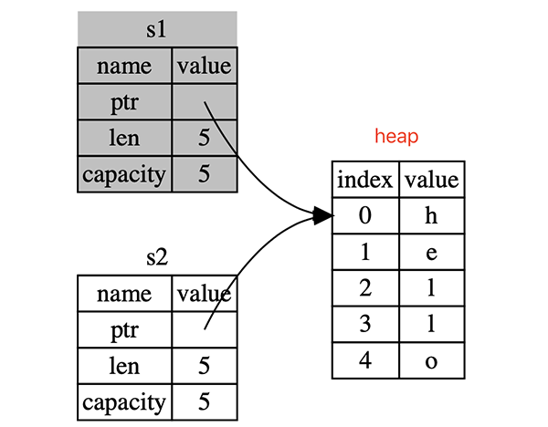

《The Rust Programming Language》读书笔记（第 1-6 章）
2021 年的计划事项之一 - 学习 Rust。希望不会打击一个 C++er 的脆弱内心 :(。
Rust Version：1.49 or later。
Chapter 1 - Getting Started
- Page 8可以使用 rustup（Rust 官方的“安装管理” CLI 工具）来管理 Rust 的安装、升级，以及本地文档的使用。也可以使用 rustfmt 来格式化 Rust 源代码，以统一为一致的编码风格。
- Page 11Rust 的基本编码风格是“4 空格缩进”，应用基本结构如下：
fn main() {
println!("Hello, world!"); // 这里的 println! 是一个宏（!），而非函数；
}
- Page 13使用 Cargo：
- 创建、编译、运行及检查 Rust 项目：
cargo new <project_name>
cargo build # compile.
cargo run # compile & run.
cargo check # check, but not compile into binary (faster than aboves).
cargo build --release # building for release.
cargo update # update all the dependent crates.
cargo doc --open # show help documents of all the deps.
- Cargo.toml 配置文件格式：
[package]
name = "hello_cargo"
version = "0.1.0"
authors = ["Becavalier <yhorg@hotmail.com\>"]
edition = "2018"
[dependencies]
- Cargo.toml 配置文件使用 TOML（Tom’s Obvious, Minimal Language）格式；
- Rust 中“包”（package）内部的代码被称为 “crates”。
Chapter 2 - Programming a Guessing Game
- Page 36完整示例代码：
- Rust：
use std::io; // use the standard lib (IO).
use std::cmp::Ordering;
use rand::Rng;
fn main() {
println!("Guess the number!");
let secret_number = rand::thread_rng()
.gen_range(1, 101); // [lower-bound, upper-bound).
loop {
println!("Please input your guess:");
// the variable "guess" is mutable, bounding to a new String value.
let mut guess = String::new();
// "read_line" accepts a reference to a mutable String value.
io::stdin()
.read_line(&mut guess) // will return a "io::Result" value.
.expect("Failed to read line.");
// convert string to number.
// shadow the previous value of "guess" with a new one.
let guess: u32 = match guess.trim().parse() { // parse into a numerical value.
Ok(num) => num,
Err(_) => continue,
};
// string template with placeholders.
println!("You guessed: {}", guess);
match guess.cmp(&secret_number) { // "secret_number" would be inferred as u32.
// several amrs (patterns).
Ordering::Less => println!("Too small!"),
Ordering::Greater => println!("Too big!"),
Ordering::Equal => {
println!("You win!");
break;
},
}
}
}
- Cargo.toml：
[package]
name = "guessing_game"
version = "0.1.0"
authors = ["Becavalier <yhorg@hotmail.com>"]
edition = "2018"
# See more keys and their definitions at https://doc.rust-lang.org/cargo/reference/manifest.html
[dependencies]
rand = "0.5.5"
Chapter 3 - Common Programming Concepts
- Page 37默认情况下，Rust 中定义变量是不可变的（immutable）。可以使用
mut关键字标记定义的变量，以使其在未来可变。 - Page 39可以使用
const关键字定义常量，此时变量名必须使用大写形式，并且需要显式指明类型（Github Discussion）。其基本语义与 C++ 中的 constexpr 类似，属于 compile-time 常量。
const MAX_POINTS: u32 = 100_000;
- Page 40Shadowing（遮蔽）：重新定义同名变量，以覆盖先前的定义（可以更改值类型、可变性）。
fn main() {
let spaces = " ";
let spaces = spaces.len();
println!("{}", spaces); // 3.
}
- Page 42值类型（默认均放于栈上）：
- 标量类型：表示一个单一值。
- integers：i8 / u8 / i16 / u16 / i32 / u32 / i64 / u64 / i128 / u128 / isize / usize（最后两种依赖于具体的平台类型，32bit 或 64bit）。其中大部分数字字面量值可以携带诸如 “u8” 的后缀来表示值类型。
usize值大小应与 C/C++ 中的size_t保持一致；- “隐式的溢出”行为在调试模式下会产生 panic；
- 当需要显式处理 two’s complement wrapping 的溢出情况时，可以使用 Rust 标准库中诸如 “wrapping_*”、“checked_*”、“overflowing_*” 以及 “saturating_*” 等方法。
fn main() {
let num_a = 1_000; // 1000.
let num_b = 0xffu8; // 255.
let num_c = 0o77u32; // 63.
let num_d = 0b000111; // 7.
let num_e = b'A'; // 65.
println!("{}, {}, {}, {}, {}", num_a, num_b, num_c, num_d, num_e);
// deal with wrapping.
println!("{} {} {} {}",
200u8.wrapping_add(57), // 1.
200u8.overflowing_add(57).0, // (1, true) -> 1.
if 200u8.checked_add(57) == None { "overflow" } else { "not overflow" },
200u8.saturating_add(57), // 255 (bound to the edge values).
);
}
- floating-point numbers：f32 / f64；
fn main() {
let x = 2.8;
let y: f32 = 3.9;
println!("{} {}", x, y);
}
- Booleans：bool；
fn main() {
let x = true; // one byte in size.
let y: bool = false;
println!("{} {}", x, y);
}
- characters：char；
- 为固定的 4 字节大小（UTF-32），可存放所有 Unicode 字符。
fn main() {
let x = 'z'; // fixed four bytes in size.
let y: char = '中';
println!("{} {} {}", x, y, y as u32);
}
- 复合类型：将多个值进行聚合，成为一个类型。
- tuple：
- 大小固定，在声明时指定；
- 内部元素可以有不一样的值类型；
- 可以对其内部的元素进行解构。
fn main() {
let x: (i32, f64, u8) = (500, 6.4, 1);
let y = (27, "YHSPY");
let (age, name) = y; // destructuring the couple.
println!("{} {} {}", age, name, x.0);
}
- array：
- 大小固定；
- 内部元素必须类型相同；
fn main() {
let x = [1, 2, 3];
let y: [i32; 5] = [1, 2, 3, 4, 5];
let _z = [3; 5]; // equals to [3, 3, 3, 3, 3].
println!("{} {} {}", x[0], y[0], y[1]);
}
- Page 50函数：
- 必须明确指出函数形参、返回值的具体类型；
- statement 与 expression：前者没有返回值，仅表达一个动作（比如
let语句）；后者有具体的返回值（比如{}、字面量数字），且组成不包含结束的 “;”；后者可以成为前者的组成部分。默认情况下，没有显式标记返回值的函数，其在调用后默认会返回一个空 tuple（一般被称为 unit value）。
fn main() {
println!("{}", add(1, 2));
let y = {
let x = 3;
x + 1
};
println!("{}", y); // 4.
}
fn add(x: i32, y: i32) -> i32 {
x + y // or "return x + y;".
}
- Page 58控制流：
- if：
- if…else 结构可以作为表达式返回一个值；
- 条件（condition）部分的求值必须为 bool 类型。
fn main() {
let condition = true;
if condition { // the condition should be a "bool" value.
println!("condition was true");
} else {
println!("condition was false");
}
// the "if" and "else" blocks should return the same type.
let number = if condition { 1 } else { 0 };
println!("{}", number);
}
- loop：
fn main() {
let mut counter = 0;
let result = loop {
counter += 1;
println!("{}", counter);
if counter == 10 {
break counter;
}
};
println!("Exit with {}!", result);
}
- while：
fn main() {
let mut counter = 0;
while counter != 10 {
counter += 1;
println!("{}", counter);
};
println!("Exit with {}!", counter);
}
- for：
fn main() {
let arr = [1, 2, 3, 4, 5];
for element in arr.iter() {
println!("{}", element);
}
for number in (1..4).rev() { // use Range.
println!("{}", number);
}
}
Chapter 4 - Understanding Ownership
- Page 67Ownership（所有权）：
- Rust 的（堆）内存管理策略：内存是通过一个所有权系统来管理的，该系统有一套规则，编译器在编译时进行检查，因此不会降低应用的运行时效率；
- 编译时大小可确定的基本类型，其默认的赋值语义为 copy；
- 如果一个类型实现了 Copy trait，该类型值在经赋值后，其原变量的值仍然有效。若一个类型或其任意组成部分实现了 Drop traits，则该类型无法再实现 Copy traits。默认已实现 Copy traits 的类型有：
- 所有整型类型（u32）；
- 布尔类型；
- 浮点数类型；
- 字符类型；
- 仅包含有实现了 Copy traits 元素的 tuple（*(i32, i32)*）。
- Rust 所有权的基本规则：
- Rust 中的每一个值都有一个与其对应的，被称为 “owner” 的变量；
- 当 owner 脱离作用域范围后（即持有 owner 的对象），对应的值将会被抛弃。
- String 在赋值时的默认语义（move）：
- 拷贝栈内存上的对象，但只对堆内存进行
move语义。原对象将失效。
fn main() {
// allocate a String on the heap.
let s1 = String::from("hello");
let s2 = s1;
println!("{}", s2); // str_x is invalid at this point.
}

- String 的拷贝语义（clone）：
fn main() {
let s1 = String::from("hello");
let s2 = s1.clone(); // use the clone version.
println!("{} {}", s1, s2);
}
- Ownership 在函数调用与返回间传递：
fn main() {
// gives_ownership moves its return value into _s1.
let _s1 = gives_ownership();
let s2 = String::from("hello"); // s2 comes into scope.
// s2 is moved into takes_and_gives_back, which also moves its return value into _s3.
let _s3 = takes_and_gives_back(s2);
}
// Here, _s3 goes out of scope and is dropped.
// s2 goes out of scope but was moved, so nothing happens.
// _s1 goes out of scope and is dropped.
fn gives_ownership() -> String { // gives_ownership will move its return value into the function that calls it.
// some_string comes into scope.
let some_string = String::from("hello");
// some_string is returned and moves out to the calling function.
some_string
}
// takes_and_gives_back will take a String and return one.
fn takes_and_gives_back(a_string: String) -> String { // a_string comes into scope.
// a_string is returned and moves out to the calling function.
a_string
}
- 引用和借用（Reference & Borrowing）：
- Rust 中的“引用”同 C/C++ 类似，从语法形式上可以理解为指针（取地址）。但不同点在于 Rust 中的引用可以被重新赋值，即重新引用到其他的变量上。并且借助“自动引用与解引用”机制，只有在赋值（产生副作用）时才需要显式解引用（*），而在使用引用所指向变量的值时则不需要。
fn main() {
let mut x = 10;
let mut k = 10;
let mut y = &mut x;
*y = 100;
y = &mut k;
*y = 100;
println!("x = {}, k = {}", &x, &k);
}
- “将引用作为函数参数的形式”被称为 - “借用（borrowing）”；
fn main() {
let s1 = String::from("hello");
let len = calculate_length(&s1);
println!("The length of '{}' is {}.", s1, len);
}
// the parameter takes a reference to a String object.
fn calculate_length(s: &String) -> usize {
s.len()
}
- 在一个特定作用域范围内，只能有一个“可修改引用”，且“可修改引用”与“不可修改引用”不能在该作用域共存；
- 可防止运行时的数据竞争（data races）；
- “特定作用域”是指某个引用从被定义到实际使用的那部分区域（引用的“定义-使用”范围不能交叉）。
fn main() {
let mut s = String::from("hello");
let r1 = &mut s;
let r2 = &mut s;
println!("{}, {}", r1, r2); // !!! error occurs !!!
let mut a_s = String::from("world");
let ar1 = &a_s;
let ar2 = &a_s;
let ar3 = &mut a_s; // !!! error occurs !!!
println!("{}, {}, {}", ar1, ar2, ar3);
}
- slice（*&str*）：一种特殊的引用，可用于引用集合类型内部的一段连续内存，而非整个集合；
- 字符串字面量值（String Literal）为可执行文件中对应字符串表中字符串的部分 slice，因此默认情况下是不可变的；
- slice 语法可用于所有集合类型（String、array、vector）。
fn first_word(s: &str) -> &str { // accpet both String and String Slices.
let bytes = s.as_bytes();
for (i, &item) in bytes.iter().enumerate() {
if item == b' ' {
return &s[0..i];
}
}
&s[..]
}
Chapter 5 - Using Structs to Structure Related Data
- Page 94Struct：
- Struct 的实例只能将整个实例被标记为“可变”，而无法仅标记其中的某个字段；
struct User {
username: String,
email: String,
sign_in_count: u64,
active: bool,
}
fn main() {
// own all its data by the instance itself.
let user = build_user(
String::from("someone@example.com"),
String::from("YHSPY"));
println!("{} {} {} {}", user.username, user.email, user.active, user.sign_in_count);
let _another_user = User {
email: String::from("another@example.com"),
..user // use struct update syntax.
};
}
fn build_user(email: String, username: String) -> User {
User {
email, // use the field init Shorthand.
username,
active: true,
sign_in_count: 1,
}
}
- 创建 Tuple Struct：即没有命名成员的 struct 类型；
- 其可用行为（解构、成员引用方式等）与 tuple 相同；
- 常用于实现 newtype 原语（用于保证单个值，使其具有一定语义）；
struct Years(i64);
struct Days(i64); // tuple struct.
impl Years {
fn to_days(&self) -> Days {
Days(self.0 * 365)
}
}
impl Days {
// truncates partial years.
fn to_years(&self) -> Years {
Years(self.0 / 365)
}
}
fn old_enough(age: &Years) -> bool {
age.0 >= 18
}
fn main() {
let age = Years(5);
let age_days = age.to_days();
println!("Old enough {}", old_enough(&age));
println!("Old enough {}", old_enough(&age_days.to_years()));
// cannot accept Days(i64) here.
// println!("Old enough {}", old_enough(&age_days));
}
- 创建 Unit-like Struct：一般用于当需要在某个类型上实现一个 triat，但又没有任何数据需要存储在该类型本身的时候；
fn main() {
struct Empty();
}
- 打印 struct：需要实现相应的 triat（std::fmt::Display、Debug），以提供格式化打印接口；
#[derive(Debug)] // derive an implementation of the triat Debug.
struct Rectangle {
width: u32,
height: u32,
}
fn main() {
let rect = Rectangle {
width: 10,
height: 20,
};
println!("rect is {:#?}", rect);
/**
rect is Rectangle {
width: 10,
height: 20,
}
*/
}
- struct 方法：包含成员方法和关联方法（类似 C/C++ 中的类静态方法，这里该方法内没有第一个 &self 参数），方法需定义在
impl结构中；- Rust 在调用成员方法时实现了 automatic referencing and dereferencing，可以自动解引用并调用方法。
#[derive(Debug)] // derive an implementation of triat Debug.
struct Rectangle {
width: u32,
height: u32,
}
impl Rectangle { // implementation block (can be multiple).
fn area(&self) -> u32 {
self.width * self.height
}
fn can_hold(&self, other_rect: &Rectangle) -> bool {
other_rect.width <= self.width && other_rect.height <= self.height
}
// associated function (don't take self).
fn square(size: u32) -> Rectangle {
Rectangle {
width: size, height: size
}
}
}
fn main() {
let rect = Rectangle {
width: 10,
height: 20,
};
let ref_rect = ▭
println!("{}", (&ref_rect).area()); // work as expected as well.
// benefit from the "automatic referencing and dereferencing".
println!("{}", ref_rect.area());
println!("{}", rect.can_hold(&(
Rectangle {
width: 20,
height: 20,
})));
let square = Rectangle::square(10);
println!("{:#?}", square);
}
Chapter 6 - Enums and Pattern Matching
- Page 114Enum：
- Rust 中的 enum 类型是一个抽象类型，其抽象层级比 struct 更高（使用层面）。可以理解为可容纳所有相同类型的一个集合；
- 默认情况下，enum 类型的大小为可容纳其内部可能的最大元素的大小；
- 相较于 struct，enum 类型本身没有“实例”的概念，但其内部元素可以分别创建对应的实例（标记实体内部存放具体值）。整个 enum 可以有公共成员方法，该方法第一个参数为调用者的引用，即某个具体的 enum 成员对象。
#![allow(dead_code)]
fn main() {
/* basic usage */
#[derive(Debug)]
enum IpAddrKind {
V4, V6,
}
#[derive(Debug)]
struct IpAddr {
kind: IpAddrKind,
address: String,
}
println!("{:#?}", IpAddr {
kind: IpAddrKind::V4,
address: String::from("127.0.0.1"),
});
/* associated values (attach data to each variant of the enum) */
#[derive(Debug)]
enum IpAddrEnum {
V4(String),
V6(String),
V4Detailed(u8, u8, u8, u8), // associated multiple values to an enum.
}
println!("{:#?}\n{:#?}\n{:#?}",
IpAddrEnum::V4(String::from("127.0.0.1")),
IpAddrEnum::V6(String::from("::1")),
IpAddrEnum::V4Detailed(127, 0, 0, 1));
/* a complicated case */
#[derive(Debug)]
enum Message {
Quit,
Move { x: i32, y: i32 },
Write(String),
ChangeColor(i32, i32, i32),
}
// enums can also have methods.
impl Message {
fn call(&self) {
println!("called by {:#?}", self);
}
}
// enum method is called by different member object.
(Message::Move { x: 10, y: 20 }).call();
(Message::Write(String::from("YHSPY"))).call();
}
- Option Enum：用于表示某个值的 null 或 not-null 状态；
- 可用 match 语句“拣选” Option 不同状态的值，分别进行处理；
- match 语句的 “_” 占位符会匹配所有情况。
#![allow(dead_code)]
#![allow(unused_variables)]
// use pattern matching.
#[derive(Debug)]
enum UsState {
Alabama,
Alaska,
}
#[derive(Debug)]
enum Coin {
Penny,
Nickel,
Dime,
Quarter(UsState),
}
fn value_in_cents(coin: Coin) -> u8 {
// will return a u8 number.
match coin { // the condition expression can be of any types.
Coin::Penny => 1, // arms.
Coin::Nickel => 5,
Coin::Dime => 10,
Coin::Quarter(state) => {
// "state" will be binded to the passing param.
println!("State quarter from {:?}!", state);
25
},
}
}
fn main() {
let some_number = Some(5);
let absent_number: Option<i32> = None;
if some_number.is_some() { // check the status of an Option.
println!("{}", &some_number.unwrap());
}
value_in_cents(Coin::Quarter(UsState::Alabama));
// matching with Option<T>.
match some_number {
None => None,
Some(i) => {
println!("the option value is {}", i);
Some(i + 1)
}
};
// use _ placeholder (match the rest of other choices).
let some_u8_value = 0u8;
match some_u8_value {
1 => println!("one"),
3 => println!("three"),
5 => println!("five"),
_ => (), // unit value, nothing will happen.
}
}
- if-let 语句：用于仅需要匹配 match 中一种条件的情况，写法上可以省略很多无关代码；
- 这里的 let 语义上不仅用来作解构时的变量绑定，也同时做 pattern matching 的语义。
#![allow(dead_code)]
#![allow(unused_variables)]
fn main() {
let some_u8_value = Some(0u8);
match some_u8_value {
Some(3) => println!("three"),
_ => (),
}
// with "if-let".
if let Some(i) = some_u8_value { // the same as in a match.
println!("three {}", i);
} else {
println!("others");
}
}